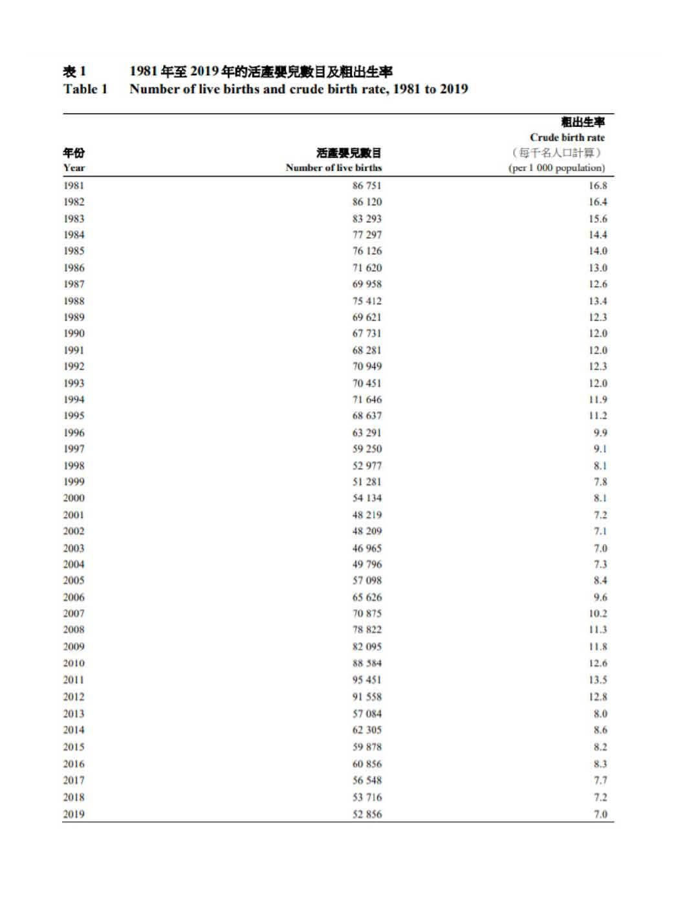
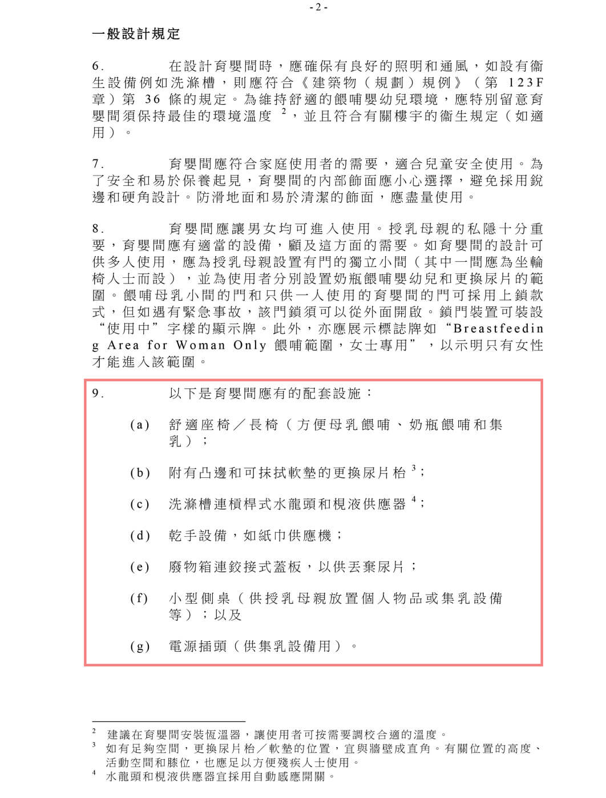

从新生儿出生率看，公众对香港育婴室有较大的需求。 根据香港统计月刊 《1981年至2019年香港生育趋势》记载，2010年至2019年香港婴儿的出生数量都在50,000人以上，其中2019年香港活产婴儿数目为52,856人。随着婴儿数量的增加，公众对育婴室的需求不断增大，香港公共育婴室的建设显得愈发重要。

香港统计月刊《1981 年至 2019 年香港生育趋势》

《在商业楼宇提供育婴间及哺集乳室（2018修订版）》
事实上， 香港政府、各公营机构、以及民间团体都尝试对育婴室的供应和设备规范， 提出过倡议和规定。
早在2014年，香港促进母乳喂委员会便成立，提倡缔造友善的母乳哺育的环境。截至2015年12月，设于香港政府物业内的育婴室共有255间。2018年，香港屋宇署发布文件 《在商业楼宇提供育婴间及哺集乳室》 ，鼓励商业楼宇内建立育婴室及规范其内部设施。2019年，立法会发布 《促进母乳喂哺》，政府当局表示一直在采取多管齐下的方式推广母乳喂哺。截至2020年12月31日，香港特别行政区卫生署家庭健康服务的官方网站展示了设有育婴室的245所政府物业，共计355间育婴室，5年增长了100间。
其中，香港屋宇署发布的 《在商业楼宇提供育婴间及哺集乳室（2018修订版）》）文件指引对育婴室的建设提出了要求，如育婴室的设置应该位于通畅易达的公用区域，并且处于卫生考虑应与卫生间分开。一般设计规定，育婴室应有的配套设施包括：舒适座椅或长椅、附有凸边和可抹拭软垫的更换尿片台、洗涤槽连杠杆式水龙头和枧液供应器（宜采用自动感应开关）、干手设备（如纸巾供应机）、废物箱连铰接式盖板、小型侧桌以及电源插头；消毒剂、地面排水渠或漏水感应器等作为可增加的配套设施。